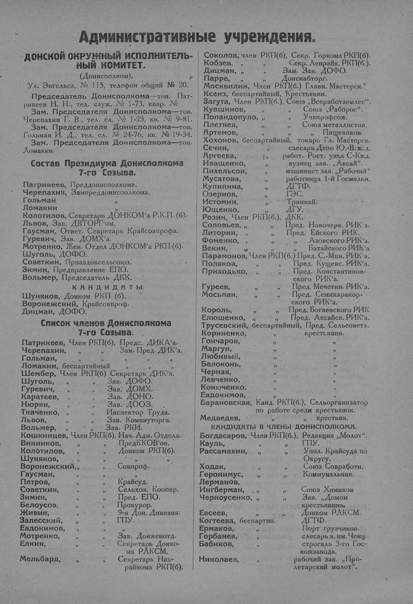

Лист источника 83
Скан

Распознанный текст
Административные учреждения.
ДОНСКОЙ ОКРУЖНЫЙ ИСПОЛНИТЕЛЬ-
НЫЙ КОМИТЕТ.
(Донисполком).
Ул. Энгельса, № 115, телефон общий № 20.
Председатель Донисполкома—тов. Пат-
рикеев Н. Н., тел. служ. № 1-73, квар. №
Зам. Председателя Донисполкома—тов.
Черепахин Г. В., тел. сл. № 1-23, кв. № 9-81.
Зам. Председателя Донисполкома—тов.
Гольман И. Д., тел. сл. № 24-76, кв. № 19-34.
Зам. Председателя Донисполкома—тов.
Ломакин.
Состав Президиума Донисполкома
7-го Созыва.
Патрикеев, Преддонисполкома.
Черепахин, Зампреддонисполкома.
Гольман "
Ломакин "
Колотилов, Секретарь ДОНКОМ'а Р.К.П. (б).
Львов, Зав, ДВТОРГ'ом.
Гаусман, Ответ. Секретарь Крайсовпрофа.
Гуревич, Зав. ДОМХ'а.
Мотренко, Жен. Отдел ДОНКОМ'а РКП (б).
Шуголь, ДОФО.
Советкин, Приаздонсельсоюз.
Зимин, Предправление ЕПО.
Вольмер, Председатель ДКК.
КАНДИДАТЫ:
Шуняков, Донком РКП (б).
Воронежский, Крайсовпроф.
Дицман, ДОФО.
Список членов Донисполкома
7-го Созыва.
Патрикеев, Член РКП(б), Предс. ДИК'а.
Черепахин, " " Зам. Пред. ДИК'а.
Гольман, " " " "
Ломакин, беспартийный " "
Шембер, Член РКП(б) Секретарь ДИК'а.
Шуголь, " " Зав. ДОФО.
Гуревич, " " Зав. ДОМХ.
Каратеев, " " Зав. ДОНО.
Нюрин, " " Зав. ДООЗ.
Ткаченко, " " Инспектор Труда.
Львов, " " Зав. Комвнуторга.
Вольмер, " " Зав. РКИ.
Кошкинцев, Член РКП(б), Нач. Адм. Отдела.
Винников, " " ПредККОВ'ов.
Колотилов, " " Донком РКП(б).
Шуняков, " " " "
Воронежский, " " Совпроф.
Гаусман, " " "
Петров, " " Крайсуд.
Советкин, " " Сельхоз. Коопер.
Зимин, " " Пред. ЕПО.
Белоусов, " " Прокурор.
Живин, " " 9-я Дон. Дивизия.
Залесский, " " ГПУ.
Евдокимов, " " "
Мотренко, " " Зав. Донженотд.
Елкин, " " Секретарь Донко-
ма РЛКСМ.
Мельбард, " " Секретарь Нах-
райкома РКП(б).
Соколов, член РКП(б), Секр. Горкома РКП(б).
Кобзев, " " Секр. Ленрайк. РКП(б.).
Дицман, " " Зам. Зав. ДОФО.
Парре, " " Донснабторг.
Москвилин, Член РКП(б.) Главн. Мастерск.
Ксенз, беспартийный, Крестьянин.
Загута, Член РКП(б.), Союз „Всеработземлес“.
Кувшинов, " " Союз „Рабпрос“.
Попандопуло, " " Учкпрофсож.
Плетнев, " " Союз металлистов.
Артемов, " " " Пищевиков.
Хохонов, беспартийный, токарь Гл. Мастерск.
Сечин, " слесарь Депо Ю.-В. ж. д.
Аргеева, " работ. Рост. узла С-К ж.д.
Иващенко, " кузнец зав. „Аксай“.
Пихельсон, " машинист зав. „Рабочий“
Мусатова, " работница 1-й Госмельн.
Купинина, " ДГТФ.
Озернов, " ГЭС.
Истомин, " Трамвай.
Ющенко, " ДГУ.
Розин, Член РКП(б.), ДКК.
Соловьев, " " Пред. Новочерк. РИК'а.
Литорин, " " Пред. Ейского РИК.
Фоменко, " " " Азовского РИК'а.
Векин, " " " Батайского РИК'а
Парамонов, Член РКП(б.) Пред. С.-Мин. РИК'а.
Поляков, " " Пред. Кущевс. РИК'а.
Приходько, " " Пред. Константинов-
ского РИК'а.
Гуреев, " " Пред. Мечетин. РИК'а.
Мосьпан, " " Пред. Семикаракор-
ского РИК'а.
Король, " " Пред. Богаевского РИК
Елюшенко, " " Пред. Аксайск. РИК'а.
Трусевский, беспартийный, Пред. Сельсовета.
Корниенко, " крестьянин.
Гончаров, " "
Маргун, " "
Любивый, " "
Белоконь, " "
Черная, " "
Левченко, " "
Конюченко, " "
Евдокимов, " "
Барановская, Канд. РКП(б.), Сельорганизатор
по работе среди крестьянок.
Медведев, " " крестьян.
КАНДИДАТЫ В ЧЛЕНЫ ДОНИСПОЛКОМА.
Богдасаров, Член РКП(б.), Редакция „Молот“.
Кауль, " " ГПУ.
Рассамахин, " " Упол. Крайсуда по
Округу.
Ходак, " " Союз Совработн.
Геронимус, " " Коммунальник.
Лерманов, " " "
Ингберман, " " Союз Химиков
Черноусенко, " " Зав. „Домом
крестьянина.
Евсеев, " " Донком РЛКСМ.
Когтеева, беспартин. ДГТФ.
Ермаков, " Порт грузчиков.
Горбанев, " слесарь з. им. Ченц.
Бабиков, " строгаль 3-го Гос-
кожзавода.
Николаев, " рабочий зав. „Про-
летарский молот“.